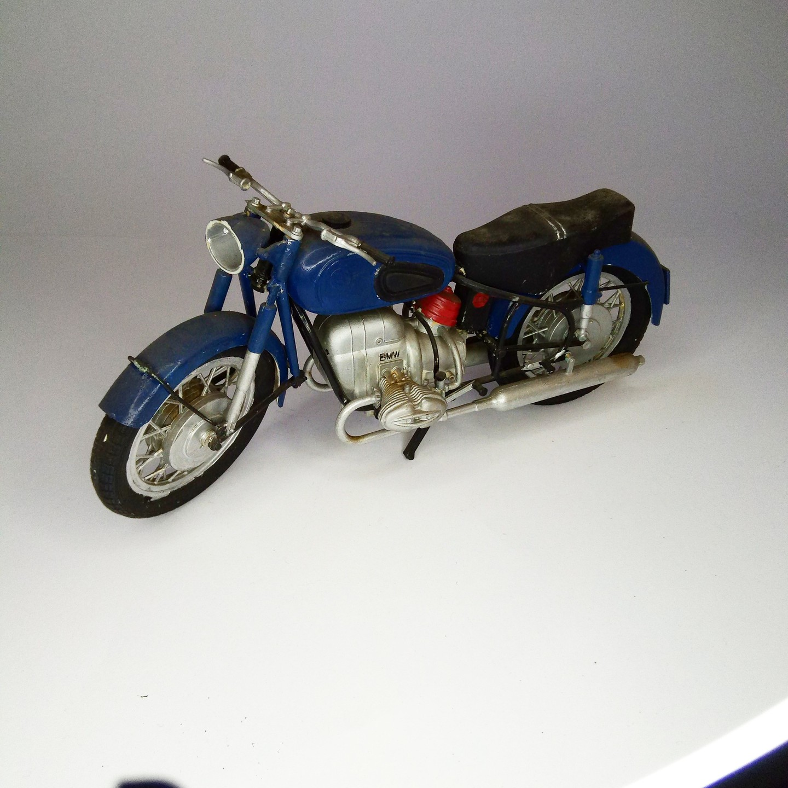

Moto · scale model archive
BNW R69 motorcycle
BNW R69 motorcycle — Kit: Airfix, Scale: 1:10. Much hopes on the kit but somewhat disappointed due to the difficulty of reproducing chrome and aluminum…

Photo gallery
English description
Much hopes on the kit but somewhat disappointed due to the difficulty of reproducing chrome and aluminum at that time
#1/10 #Airfix
Descrizione italiana
Much hopes on il kit but somewhat disappointed due unal difficulty di reproducing cromo e alluminio una quell’epoca.